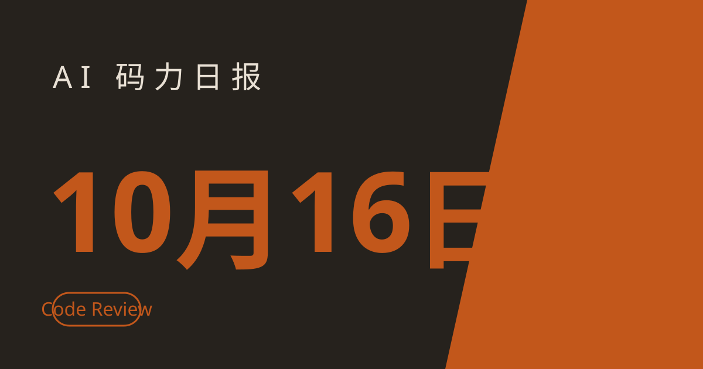

AI 码力日报 · 2026年10月16日

⚡ 一句话速览
- Google 通知 Gemini AI Plus 用户：11 月 13 日起不能再手动选择 Pro 模型，只能留 Flash 系列；想继续用 Pro 得升级到 AI Pro，价格约是现在的 4 倍。
- Anthropic 的 Code Review for Claude Code 正式 GA：多 agent 给 PR 做审查，耗时从约 20 分钟压到 6–10 分钟，企业用户 GA 促销送至少 $10,000 review credits。
- Anthropic 在 IPO 前路演会上公布 Q3 营收 168 亿美元、经调整口径盈利，目标估值超 2 万亿美元——但经营亏损仍超 80 亿美元。
- OpenAI 联手 Block：用 AI 安全防御系统 Daybreak 把"多阶段攻击模拟→修复验证"的链路压缩到约 2 小时，人类对每个上线修复做最终确认。
🤖 今日 AI Coding 动态
OpenAI × Block：Daybreak AI 安全防御，2 小时走完攻击模拟到修复
一句话亮点：金融公司开始把找漏洞这事交给 agent 了——Block（Square、Cash App 的母公司）确认在 OpenAI 基础设施上搭了一套 AI 驱动的防御系统，能把从 SQL 注入、提权到横向移动的完整多阶段攻击链模拟跑一遍，全程约 2 小时。
这套系统由 OpenAI 和 Block 在 10 月 14 日联合披露，基于 OpenAI 的 Defense Factory 计划和一套叫 Daybreak 的模型路由框架。两边都把它包装成"企业安全团队未来怎么干活的模板"：AI 负责发现、检测和响应，人类负责给每个上线的修复签字。对国内开发者更实际的启发：攻防两端都在 agent 化，防御侧先行的公司已经把修复时延压到了小时级，你的安全 review 流程如果还全是人肉，得开始想想怎么接 agent 了。原文
Anthropic：Code Review for Claude Code 正式 GA
一句话亮点：Anthropic 把 research preview 阶段的 Code Review 做成了正式产品，面向 Claude Team 和 Enterprise 组织——多 agent 自动审新 PR，GA 版本比 preview 快 3 倍。
preview 用户的反馈很实在：确实能在人工 review 之前抓到真问题，但要求更快、更安静、按变更大小匹配审查力度。GA 版本回应了这三点：典型审查时间从约 20 分钟降到 6–10 分钟，审查结论按"问题是什么→触发条件→修复建议"三段式写，管理员还能给每个仓库定 Quick/Standard/Deep 三个审查等级，常规库快速过、核心库深度查。接入也简单：管理员在 Claude Code 设置里打开，装上 Claude GitHub App，选仓库就行，开发者零配置。昨天 10–15 刊刚聊过"AI 产代码涨 30% 但交付没动、瓶颈在 review"，今天官方的答案就 GA 了——配套教程见文末。原文
Google：Universal Cart 在 Search 和 Gemini App 正式上线
一句话亮点：Google 在 I/O 上预告的 Universal Cart 昨天（10 月 15 日）正式上线，跑在 Search 和 Gemini app 里——AI 购物从"帮你找"进化到"帮你买"。
技术上是 Google 自研的 UCP（Universal Commerce Protocol）开放标准在背后撑着，年初就和零售巨头联合开发的。购物车跑在 Gemini 模型上，会给价格历史洞察、找折扣、补货提醒，还能主动发现跨店组装的不兼容（比如攒机时零件不匹配并给替代方案）。商家保持卖家身份，订单确认和售后还是商家出。推进节奏：先美国，之后几个月扩到加拿大和澳大利亚，再往后是英国；YouTube 的 UCP 结账也在路上。对开发者的机会点：这是一套开放协议，做电商工具的可以提前研究 UCP 怎么接，AI 购物 agent 的入口正在标准化。原文
🐑 今日羊毛
Anthropic Code Review GA 促销：合格 Enterprise 组织送至少 $10,000 review credits
一句话：Code Review 正式 GA 附带的推广福利——符合条件的 Enterprise 组织能拿至少 1 万美元的 review credits，白嫖多 agent 审 PR。
- 怎么薅：组织管理员在 Claude Code 设置里打开 Code Review → 安装 Claude GitHub App 并选定仓库 → 设定各仓库的 Quick/Standard/Deep 审查等级 原文
- 有效期：GA 促销福利，截至撰写时官方未公布截止日，先到先得的架势
- 适合谁：Claude Team / Enterprise 组织的工程团队——PR 量大的仓库最划算
OpenAI Pro 200 老用户：账户里可能多了 62,500 usage credits（约值 $2,500）
一句话：OpenAI 为 Pro 200 降配做的补偿——受影响的老用户账户里被自动塞了 62,500 credits，年底过期，不用就作废。
- 怎么薅：不用领，自动到账，登录账户看余额确认即可；背景是 Pro 200 从"20 倍 Plus 用量"降到"10 倍"，GPT-6 Pro 也从每周 200 条砍到 100 条，这是安抚费 原文
- 有效期：2026 年 12 月 31 日前用完（截至撰写时）
- 适合谁：受 Pro 200 降配影响的老订阅用户——新订阅的没有，别白跑一趟
⭐ 今日 GitHub 热门项目
xerj-org/xerj
Rust 写的单二进制本地代码搜索引擎，解决"agent 读代码靠一个个文件翻、上下文全浪费在无关代码上"的问题：自动索引任意文件夹，agent 直接拉它需要的精确代码段；碰到新任务先去找最接近的开源仓库，把别人的解法复用过来再动手。受控实验号称同等解决率下输出 token 少 2.7 倍，BM25 搜索+MCP 接口内置。10 月 15 日单日涨星约 944（截至撰写时）。适合：每天让 agent 啃大仓库的人——装一个，agent 找代码的效率立竿见影。项目地址
wheresryan22/anatomy
一个 Claude skill，解决"技术概念讲不清"的问题：它给一个概念造一台"工作原理就是这个概念"的假想机器，再渲染成可交互的等距 SVG/WebGL 小装置——几十个带阴影的小零件装在卡片里，随鼠标键盘动起来，所有数字都来自驱动零件的同一个模型。零依赖，只用 Node 内置模块。10 月 15 日单日涨星约 1,374（截至撰写时）。适合：写技术博客、做分享的人——比干巴巴的示意图有说服力得多。项目地址
Ebony-Vinyl/dsh-our-free-model
DeepSeek Harness shell 的插件，解决"免费模型额度分散、各家都要登录绑 key"的问题：装上之后模型选择器里直接出现 DeepSeek V4.1 Flash、Kimi K3 等免费前沿模型，不用登录、不用 API key；免费通道走 OpenCode 的 Zen 和 Kilo AI 的公开网关，本地再起一个 OpenAI 兼容的中继端口让其他工具也能调，用量统计全留本地。10 月 15 日单日涨星约 1,075（截至撰写时）。适合：做原型、跑 demo、不想为 token 掏钱的人——生产环境别指望免费通道的稳定性。项目地址
storytold/artcraft
AI 图片和视频的"IDE"，解决"AI 生图人物一换镜头就变脸、机位全靠运气"的问题：先在 2D 里构图、3D 里布景、摆好虚拟演员的姿势和机位，再选模型生成，人物身份和机位在连续镜头里保持一致，还支持从摆好姿势的人偶上迁移身份、抠背景。同一个作者还做了纯 Rust 重写 Photoshop 的 photocraft（见今日工具栏）。10 月 15 日单日涨星约 893（截至撰写时）。适合：做 AI 短剧、连环画、产品演示视频的人。项目地址
🛠️ 值得一试的工具：storytold/photocraft
是什么：纯 Rust 从零重写的 Photoshop——图层、蒙版、调整图层、文字、笔刷全有，能打开、编辑、保存真实的 PSD 文件。最妙的设计：每个编辑动作都是一条命令，同一套引擎可以从图形界面、命令行、JSON 控制通道或 MCP 服务器驱动。
解决什么痛点：修图被 Adobe 订阅绑死是其一；对我们这种读者更有意思的是其二——agent 终于可以直接"动手"修图了，"把这张图的阴影压暗 20%、导出一份"不再是空话，而是一条发给 MCP 服务器的真实命令。免费额度：开源免费，本地跑。
verdict：观望——Rust 单二进制+真实 PSD 读写+MCP 驱动的组合确实少见，单日涨星近 1500 说明不止我一个人心动；但我还没亲手验证它的构建和复杂 PSD 兼容性，重实现项目早期翻车是常态，先拿测试文件跑一轮，别直接上生产稿。项目地址
🎓 3 分钟小教程：让 Claude Code Review 替你审 PR
前置条件：Claude Team 或 Enterprise 组织；你有组织管理员权限；目标仓库在 GitHub 上。
- 管理员打开 Claude Code 设置，找到 Code Review 开关并启用；
- 安装 Claude GitHub App，授权并勾选要接管的仓库；
- 给每个仓库定审查等级：常规库选 Quick 快速过，核心库选 Deep 深度查，默认 Standard；
- 之后每个新 PR 会自动触发审查，开发者这边零配置、零改动。
预期效果：新 PR 几分钟内收到审查评论，按"问题是什么→触发条件→怎么修"三段式写；preview 阶段的用户反馈是真能在人工 review 之前抓到 bug。昨天说的 review 堰塞湖，今天至少有官方工具可以试了。
🏆 本周 Top 5
周五加更：从本周日报里挑 5 条最好的。
- Claude Code Review 正式 GA（10-16）——审查提速 3 倍 + 企业送 $10,000 credits，昨天刚说的 review 堰塞湖，今天官方答案就来了。原文
- Google 科研福利：1 万名科研人员免费拿 Antigravity 最高档 6 个月（10-15）——随 Argon 一起放的名额，先到先得，做 AI for Science 的别错过。原文
- Gemini 4 Argon 全面开放（10-14）——API 介绍价 11 月底翻倍；Chrome 团队拿它几周重构了 600 万行祖传代码，Google 开始"自己先吃狗粮"。原文
- Claude Max/Team 每月免费 API credits（10-12）——Max 5x 每月 $100、20x 每月 $200，不领作废、月底清零。原文
- freellmapi：34 家免费 LLM 额度聚成一个 OpenAI 兼容端点（10-15）——每月约 74 亿 token 的免费额度，智能路由+自动故障转移，原型党福音。原文
数据截至撰写时，仅供参考。